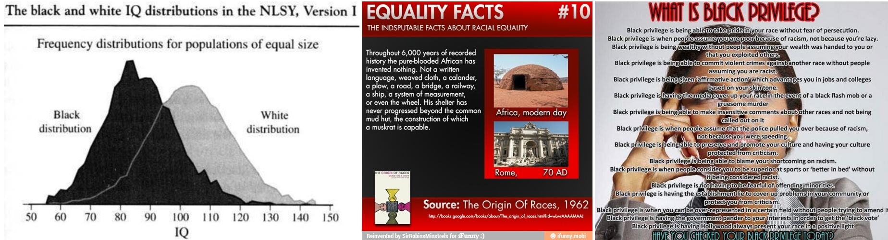
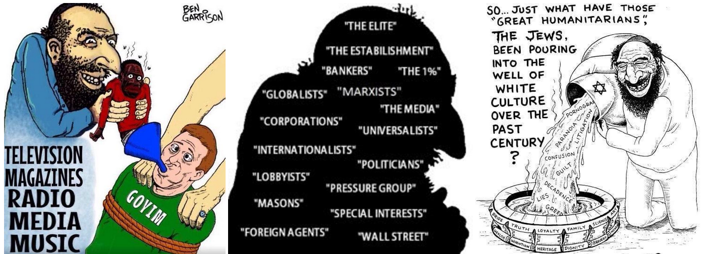

2022-05-23 08:00
When someone like Payton Gendron walks into a Buffalo supermarket intent on murdering as many Black people as possible it's natural to want to dismiss him as an outlier, a lone wolf, an aberration.
But, like bacteria on an agar plate, an entire culture of white supremacy landed on Gendron's petri dish. Rather than being an example of a lone, sick individual, Gendron simply put into motion the genocidal impulses and white supremacist rage that exist within a very sick White America.
Gendron — like New Zealand shooter Brenton Tarrant — invoked the supposed "replacement," "invasion," and "genocide" of white people as his rationale for trying to kick off a race war. As many articles published in the aftermath point out, white victimology is a common theme in MAGA politics and particularly immigration policy (see this and this and this and this and this and this and this for starters).
But besides "replacement theory," I wondered what else was in Gendron's manifesto. Since over half of it is actually a "how-to kill" guide, I will not link to the full version but to a redacted version here. True, the document is an artifact of an act of terror. But reproducing it does not glorify a twisted ideology so much as it indicts a toxic culture of white nationalism that spawned Payton Gendron. It really should be read.
Similarities with the New Zealand shooter's 74-page manifesto are obvious: Gendron used the same white supremacist Sonnenrad (also used by the Ukrainian Azov Battalion), the same document structure, and he stole many of Tarrant's own words. But Gendron's 180-page document was not just a manifesto but a "how-to" manual for mass murderers.
Over half of his document discusses the pros and cons of certain firearms, weapon modifications, and body armor — as well as where a future killer might obtain such gear. It was shocking to discover how many thousands of dollars this teenager spent on weaponry, how readily available it was, and how its presence failed to raise alarms in a home Gendron shared with his parents and two brothers.
Gendron's "manifesto" consists of the following sections: a Q&A about his beliefs and motivations (13 pages); his hatred of Black people (10 pages); hatred of Jews (30 pages); Arabs and whites (2 pages); cryptocurrency (2 pages); plans for carrying out his attack (5 pages); a how-to weaponry buying guide (94 pages!); messages to various political groups (2 pages); and his general thoughts, which are basically Tarrant's (22 pages).
The ten pages devoted to portraying African Americans as a mongrel race are beyond ugly and cite questionable, discredited, and retracted scholarship. One article written by Philippe Rushton in a Canadian psychology journal brought up this disclaimer:
"Although Rushton ceased teaching for the Department of Psychology in the early 1990s, he continued to conduct racist and flawed studies, sometimes without appropriate ethics approval [1], for two more decades. There are other ethical concerns surrounding Rushton’s research. In particular, much of this research was supported by the Pioneer Fund, a foundation formed in 1937 to promote eugenicist and racist goals."
Another Rushton article Gendron cited had been retracted:
"Rushton and Templer (2012) contend that animal studies show that dark skin pigmentation is reliably related to increased aggression and sexual activity. They speculate that the same may be true in humans, and claim that the psychological literature supports this contention that is grounded in evolutionary theory. Their thesis is that genetic differences, related to darkness of skin colour, explain supposed racial differences in sexual behavior and violence. Both authors are now deceased, and so we cannot speculate about their motivations and intents when publishing this work."
On the whole, Gendron's main point is that Blacks are inferior to whites and that, owing to white superiority, coexistence is impossible. People should go back to where they came from — well, everyone except for white people who after all this time might as well be regarded as natives (arguably, indigenous and African-American people have a greater claim here).
One of Gendron's graphics depicts a mud hut with the nonsense claim that Africans have contributed nothing of value in 6000 years (ignoring Egyptian, Kush, Nok, Aksum, Mali, Songhai, and Zulu civilizations). But isn't that precisely what Iowa's white supremacist Congressman Steve King said?

Now, if Black people are simply inferior, then discrimination, structural racism and civil rights violations are all lies. And white privilege too must be a fake and fraud. And, what the hell, let's turn it around and declare that Black privilege actually exists. And if the Civil Rights movement, or Black Lives Matter, chafes at inequality, well, then it's simply an abuse of power, an example of [Jewish] propaganda, or reverse racism. Such is the way a white supremacist's mind works. But, again, how are these views significantly different from Donald Trump's half century of overt racism? Or Christopher Rufo's attacks on the reality of white privilege?
Billions of specks of lethal airborne bacteria like Trump's, King's, Rufo's and Rushton's, and toxic particles from discredited studies like the Moynihan Report which blamed Black Americans for their own mistreatment, continually swirl around in the American atmosphere, eventually settling on the agar plates that grow citizens like Payton Gendron.
Perhaps not totally unexpected was the vehemence of Gendron's antisemitism. If you are a white supremacist who believes African-Americans have no intellect and no agency but you are also a conspiracy nut, then you need to blame someone for all the world's problems. And what better people than Jews?
But now we have stumbled upon the white supremacist’s dilemma: if both are enemies, but Blacks are completely inept, how do Jews and Blacks together create so much misery for god-fearing white Christians? Simple: Blacks are simply a Jewish tool for dividing white America.
"'The elite', 'The 1%', 'The bankers', 'The capitalists', (((them))), 'The marxist’s' they all refer to the same group: THE JEWS!! [...] The real war I'm advocating for is the gentiles vs the Jews. We outnumber them 100x, and they are not strong by themselves. But by their Jewish ways, they turn us against each other. When you realize this you will know that the Jews are the biggest problem the Western world has ever had. They must be called out and killed, if they are lucky they will be exiled. We can not show any sympathy towards them again."

Note that "they turn us against each other" is precisely the same formulation that MAGA Republicans have chosen to justify bans on teaching CRT or acknowledging LGBTQ+ realities. To the white supremacist mind, "globalists" — not America's social inequities themselves — are responsible for sowing division, and this has apparently necessitated bans on "divisive concepts" in schools throughout America.
If you can’t talk about it, it doesn’t exist.
Gendron actually spent three times the pages describing "Jewish ways" than he did African-American "inferiority." I won't reproduce his crudest images — especially the one with the Hitler quote — but he used cartoons depicting a Jew stuffing African-Americans down the throats of non-Jews, another poisoning the well of white culture, and another identifying "Jews" as a stand-in for anyone with power or influence. And, if course, they are responsible for most of the problems of the Western world:
"The Jews are responsible for many problems that we in the western world face today. They will stop at nothing to ensure that they have full control over the goyim. The most common way the Jew does this is by weakening us with their propaganda. Since they mostly own mainstream media, this is easy. They will create infighting between our people and races so we are fighting each other rather than them. For example, currently the Jews are spreading ideas such as Critical Race Theory and white shame/guilt to brainwash Whites into hating themselves and their people. For our self-preservation, the Jews must be removed from our Western civilizations, in any way possible. I should also mention that not all “Jews” are ethnic or religious Jews. Jeff Bezos for example is not a religious or ethnic Jew, but may be considered a Jew. All elitists and globalists may be considered a “Jew” simply because they act like one."
Funny he should mention Critical Race Theory. If you have read any of Christopher Rufo's anti-CRT materials, you will recognize the same Christian nationalist bacilli that ended up on Gendron's agar plate. Christian nationalist animus toward "globalists" and "elites" betrays its origins in classical antisemitism.
Another graphic implies that African-Americans were not bright enough to create the NAACP themselves (in fact, its primary founder, W.E.B. DuBois, was arguably the brightest of them all), and that the NAACP was not only a Jewish tool but a Communist plot.
According to Gendron, Jews are responsible for pornography, abortion, the grooming of gay kids, and converting children from potential Christian breeders into atheist transsexuals. This is apparently a plot to reduce white Christian demographics. Gendron wrote that he learned the "truth" of all this from following 4Chan, World Truth Videos, Daily Archives, and the Daily Stormer.
The mass-murderer’s choice of neo-Nazi websites may at first appear to be a departure from more mainstream MAGA news and opinion sources like the Federalist, WorldNet Daily or the Daily Blaze. But they all share precisely the same white supremacist and Christian nationalist preoccupations with Communists, “globalists,” Eurocentrism, and rejecting any acknowledgement of the racist society we live in.
But white supremacy is not just for MAGA Republicans.
Ajamu Baraka, contributing columnist for the Black Agenda Report, tied together the Buffalo massacre with the concierge service that NATO (and naturally the present Democratic administration) has shown a white European nation — in contrast to their 2011 invasion of Libya:
“Zelensky talks about the need to ‘defend the West,’ ‘Europeanness,’ ‘Western values,’ and the liberal/left does not recognize the inherent assumptions of white supremacy in those terms. But Payton Gendron did and [that] is why he enlisted in Zelensky’s fight not in Ukraine but in the middle of an African American community.”
It is ironic that American Liberals, in embracing eurocentric chauvinism in the Ukraine via relaxed immigration caps and steroid-infused defense spending not offered on this scale to any other country, are on exactly the same page as MAGA Republicans celebrating their own eurocentric white chauvinism at their CPAC convention in Hungary.
Baraka connects all the dots:
“Buffalo closes the loop that connects crude white supremacy with its more polished and dangerous expression. Both of these versions represent a consensus that is committed to using force and violence to ensure that white power will not be ‘replaced.’ This new consensus has created the ideological foundation for the legitimation of a cross-class white supremacist defense of something called European values and the interests of Europe.”
All of which raises the question: if the GOP is based on white supremacy, and white Liberals won’t reject the inherent white chauvinism and white supremacy in their own foreign policy, how can Democrats ever hope to fight the cruder versions from the GOP?